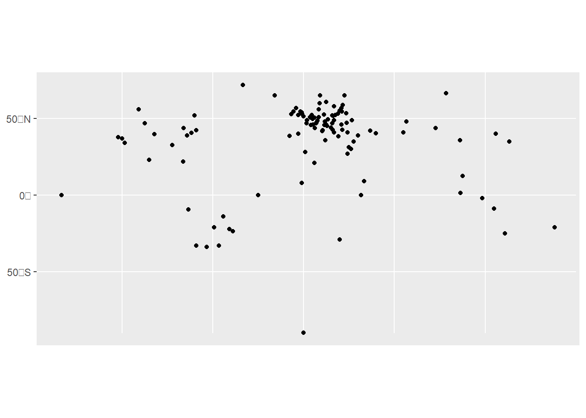
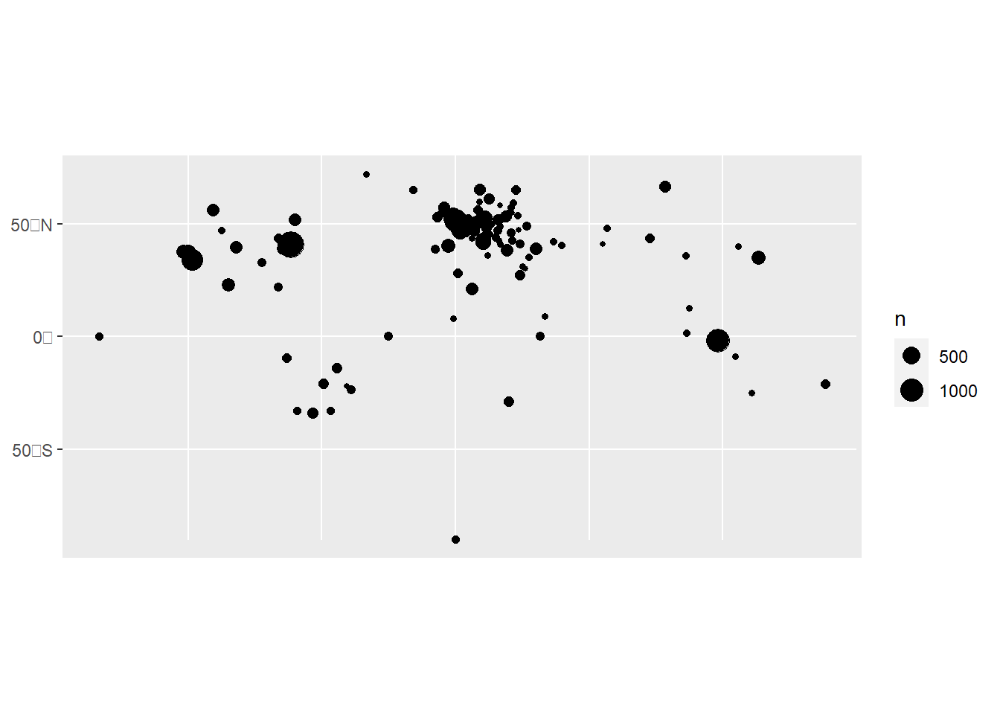
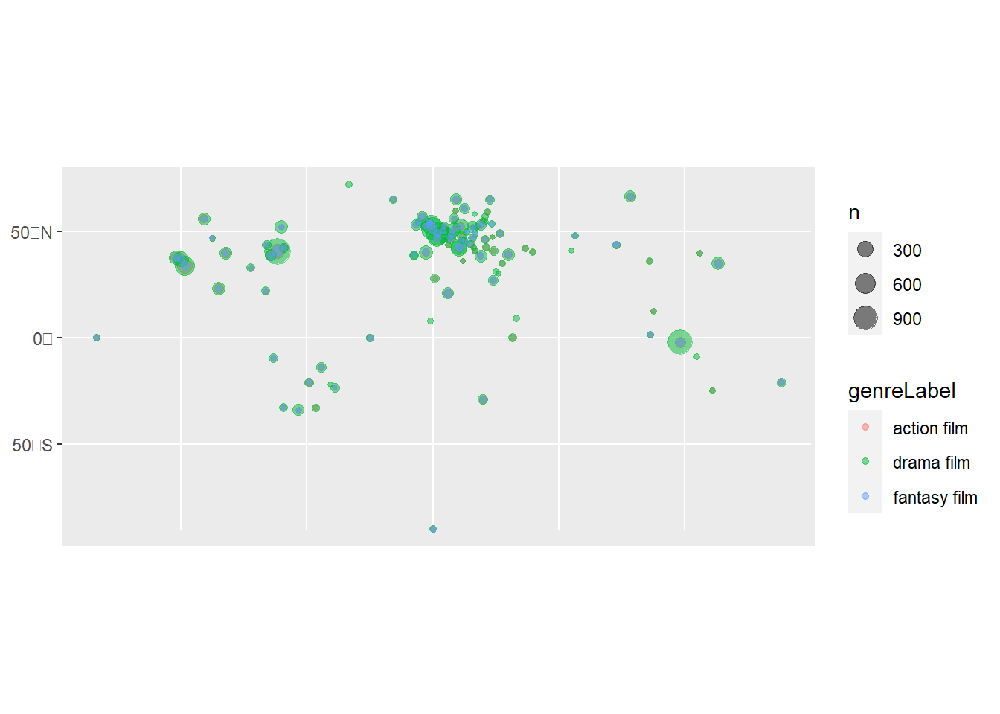

library(tidyverse)
library(sf)
movie_locations = read_csv('movie_locations.csv')8 Digital Mapping 3
This week we are going to make a slightly different type of map: a points or dot map. We saw some examples of these two weeks ago.
The main difference is that instead of matching place names up to shapes, this time, we will map individual points based on sets of coordinates.
In some ways, this is easier than the choropleth map we made earlier.
To recall, to make a choropleth map, we needed to find a base map of relevant shapes (such as the municipalities of the Netherlands, or countries of the world), as well as a dataset with some data about those named places, and use left_join to merge the two together, before drawing the map.
A points map has a slightly different process. Rather than having names of regions, to make a points map, we will need coordinates, pointing to a specific point on the earth’s surface.
Latitude and Longitude
These take the form of two numbers, specifying latitude and longitude. Latitude measures the north-south position of a point on the surface of the earth, ranging from +90°(North Pole) to -90°(South Pole), with the equator at 0°. Longitude measures the east-west position. 0°is found in a line running through Greenwich, in London, known as the prime meridian.

Coordinates can be expressed either in decimal (the latitude for Leiden is 52.160114 and the longitude is 4.497010) or degrees/minutes/seconds (DMS notation). In DMS notation, the latitude for Leiden is 52° 9' 36.4104'' N and the longitude is 4° 29' 49.2360'' E.
In decimal, points to the south of the equator and to the west of the prime meridian are given negative numbers (the coordinates for Buenos Aires are -34.603722, -58.381592 in decimal).
In DMS, points are specified whether they are East/West/North/South of the prime meridian and equator, making Buenos Aires 34° 36' 13.3992'' S and 58° 22' 53.7312'' W. In all of our cases, we’ll use decimal notation.
Getting Points for Maps
There are many ways to get sets of points to map. In some cases, you might be given the coordinates alongside the data itself. In many other cases, you might just have a city, village, or address name with no coordinates. In this case, you’ll have to find coordinates for these places.
Manual Method
If you have a small number of well-known, modern places (a list of capital cities, for example), you might just want to look them up on Wikipedia. Each place should have a hyperlink with a set of coordinates, given in degrees/minutes/seconds. If you click on this link you’ll land on a page which also contains the decimal notation, which can be copied into a spreadsheet, for example.
Gazetteers
If you have a large number of places, maybe including some which are more obscure, are historical, or in several languages, you could use a gazetteer. A gazetteer is like a geographical dictionary: it contains names of places, and usually some kind of reference to their position on earth.
Perhaps the most well-known gazetteer is Geonames, which contains coordinates and other information for about 12 million place names. Gazetteers are often made with specialist subjects in mind, for example the Pleiades gazetteer of ancient places, or the World Historical Gazetteer.
Most gazetteers allow you to download the entire underlying dataset, which can be useful to link your dataset of place names to the relevant coordinates.
Gazetteers can be quite complex, because of the huge variety in the way places are given names, particularly over time, and because there are often multiple places with the same name. Places can also be named differently in different cultures and languages. Particularly if you want to automatically link places to coordinates, you’ll need to proceed with caution, and check your results manually afterwards.
Geocoding service
Another way to find coordinates for a list of places is to use a geocoding service. These are resources which allow you to enter or upload a list of place names or addresses, which are then looked up using a geocoding API, and the coordinates are returned. This is particularly useful if you have a fairly large dataset of places, and if they are modern addresses. An advantage of a geocoding service is that they will usually take a full address into account, which is not always the case with a gazetteer. In this way, they can distinguish between Dublin, Ireland, and Dublin, Ohio.
These tools are usually commercial services which allow you to use them for free with some restrictions. One example of a web service is Geoapify. You can also use services in certain versions of QGIS and ArcGIS.
Making points maps in R
Whatever method you use, you’ll need at minimum, a dataset containing latitude and longitude coordinates (in separate columns). In many cases, you’ll also want some further data about each point, which could be used to control their size or colour.
Making a simple features object
Once you have this, you’ll need to make your own simple features object from this dataset. If you remember from last week, a simple features object is a special geographic object, which can be created and edited using the R package sf. The maps we downloaded from RNaturalEarth were in this format.
Let’s start with the dataset of Nobel prize winners we used last week to make a choropleth map. This data also has longitude and latitude points for each place of birth and death, making it quite easy to turn into a map.
In order to turn this into a simple features object, we use a function from the sf package called st_as_sf(). In this function, we will need to specify three things: the dataset of coordinates, the columns containing those coordinates, and the Coordinate Reference System (CRS). Recall from last week that the CRS specifies how distances should be calculated, and which projection should be used.
First, let’s load the dataset and the libraries we need to use.
Create the sf object using the following code:
movie_locations_sf = st_as_sf(movie_locations, coords = c('lng','lat' ), crs = 4326,na.fail = FALSE)The argument coords = needs the names of the longitude and latitude columns, in the correct order. They should be given in a vector (surrounded by c(). Next we specify the Coordinate Reference System using crs =. We’ll use the CRS 4326, which is a very widely used one. Last, we need to specify that it should ignore missing values, with the code na.fail =FALSE. Otherwise, it would give an error if we have any missing coordinates.
Map with ggplot and geom_sf
Turning this into a basic map is very simple, and follows the syntax from previous weeks, using geom_sf.
ggplot() +
geom_sf(data = movie_locations_sf)
This map obviously needs some work to make it readable. Most likely, it’ll need a background map of the world to help with orientation. This is done by simply downloading a base map using RNaturalEarth, and adding it as a layer to the code above (add it before the points data so it doesn’t draw on top of it). We may also want to adjust the limits of the coordinates using coord_sf().
Aggregating the points data
A slightly more fundamental problem in this case is that it’s not a very accurate visual representation of the data. This is because each place is simply drawn as a point. If there are multiple instances of the same set of coordinates, these will be drawn on top of each other and will disappear.
In most cases, we’ll want to aggregate the points information somehow. This is done using group_by() and tally() or summarise(). We need to include the coordinates information in the group_by, and we make the sf object afterwards. Here is how we could get a new dataset which counted the instances of each city of birth (the bornCity_now column in the dataset)
movie_locations_agg = movie_locations %>%
group_by(narrative_locationLabel, lat, lng) %>%
tally()
movie_locations_agg_sf = st_as_sf(movie_locations_agg, coords = c('lng','lat' ), crs = 4326,na.fail = FALSE)Again, this can be turned into a map using ggplot and geom_sf(), this time setting the size to the calculated column, which is called n. This needs to be done within aes().
ggplot() +
geom_sf(data = movie_locations_agg_sf, aes(size = n))
Adding further variables
Another thing we might want to do is to visualise the dots by some additional variable, for example the category of Nobel prize. We make a simple dataset, but add the category variable in to the group_by() function.
movie_locations_agg = movie_locations %>%
group_by(narrative_locationLabel,genreLabel, lat, lng) %>%
tally()
movie_locations_agg_sf = st_as_sf(movie_locations_agg, coords = c('lng','lat' ), crs = 4326,na.fail = FALSE)We can specify the color using color = within the aes(), as with size. However, we will also run into the problem of points being invisible because others are drawn on top of them. One trick to fix this is to set the transparency of the points to a value lower than one, using alpha =. In this case, alpha = should not go within the aes(), because we want to set all points to a single value.
ggplot() +
geom_sf(data = movie_locations_agg_sf, aes(size = n, color = genreLabel), alpha = .5)
Exercise:
Make a points map using the Nobel Prize dataset we worked with last week. Try the following:
Add a basemap using RNaturalEarth
Restrict the map to a certain area
Aggregate the data in a way you see fit (for example by gender, category)
You can load the dataset into your workspace with the following:
nobel_prize = read_csv('https://raw.githubusercontent.com/melaniewalsh/Intro-Cultural-Analytics/master/book/data/nobel-prize-winners/nobel-prize-winners.csv')